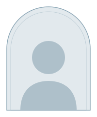
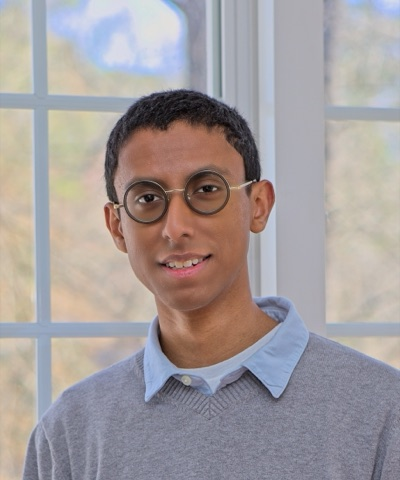

Workshop at NeurIPS 2026
AI & Science Evolution or Extinction?
Toward a domain-specific safety, alignment, and evaluation agenda for AI in science.
About the workshop
Recent years have shown an explosion of interest for supporting, accelerating, and automating scientific discovery via AI systems. Both academic and industry AI researchers have leapt to the wellspring of challenging computational problems currently unsolved by the scientific community as a way to test the state of the art. This broad appeal has translated to a plethora of interdisciplinary collaborations between AI researchers and traditional scientists across multiple fields of science, all aiming to highlight the potential of AI models to contribute to scientific research.
In order to properly evaluate how AI systems can impact the practice of science, we first must agree upon consistent definitions of success that outline how this type of integration can occur safely. Our workshop will gather researchers from statistics, philosophy of science, sociology of science, science and technology studies, psychology, and anthropology, alongside AI researchers working on AI for science, interpretability, AI safety, and agent evaluations, to address three questions:
- What epistemic values constitute scientific integrity in the era of human-AI collaboration?
- How can we build evaluations that measure whether AI systems uphold these values in practice?
- What sociotechnical guardrails can sustain robust human-AI scientific collaboration without eroding the integrity of scientific knowledge production?
Answering any of these requires expertise that no single community currently holds. Our workshop aims to both initiate a much-needed conversation for the future of the scientific and AI communities as well as foster a community of like-minded researchers committed to addressing these questions long-term in an interdisciplinary fashion.
Call for papers
To Be Announced
Submission guidelines
To Be Announced
Important dates
- Submission deadline
- August 29, 2026
- Notification of acceptance
- September 29, 2026
- Camera-ready deadline
- TBA
- Workshop date
- TBA
All deadlines are 23:59, Anywhere on Earth (AoE).
Schedule
All times are local to Atlanta (Eastern Time). The program below is preliminary.
Session 1 · Defining Science
-
08:15–08:30
Opening
- 08:30–09:00
- 09:00–10:15
-
10:15–10:45
Break
Session 2 · Protecting Science
- 10:45–12:00
-
12:00–13:00
Lunch
- 13:00–13:30
- 13:30–14:45
Session 3 · Community Building
-
14:45–15:00
Break
-
15:00–16:15
Poster Session
-
16:15–17:00
Artifact Discussion + Closing
Invited speakers & panelists
-
Ranjit Singh
Data & Society
Invited Talk 1 · TBA
-

Federico Bianchi
Together AI
Invited Talk 2 · TBA
Panel Discussion 1: The language of AI safety for science
-
Yian Yin
Cornell
-
Mel Andrews
Princeton
-
Daniel Herrmann
UNC
Debate: Is human science dead?
-
Lisa Messeri
Yale
-
David Hogg
NYU
-
Jesse Thaler
MIT
Panel Discussion 2: Scientists in the loop + research scaffolding
-

Panelist TBA
-
Panelist TBA
-
Panelist TBA
Organizers
-
Savannah Thais
Assistant Professor
City University of New York, USA
-

Nathan Suri
PhD Candidate
Yale University, USA
-
Lauren Greenspan
Technical Director
Principles of Intelligence (PrincInt), USA
-
Max Hennick
Director
Stormglass AI, Canada
-
Roberto Trotta
Professor
International School for Advanced Studies (SISSA), Italy